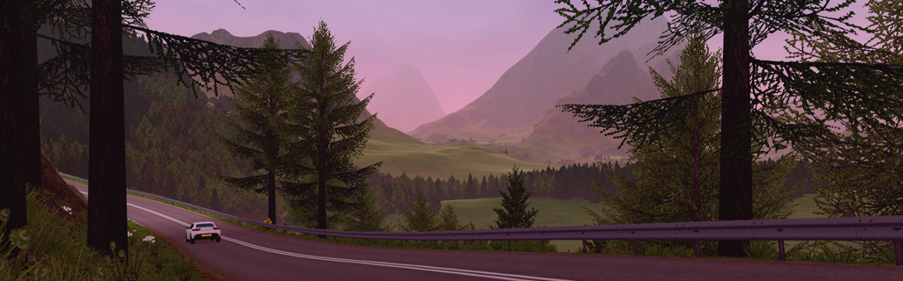

Available now on Steam
Visit store pageFor those who want a little more than the web version, Slow Roads is now available in an expanded edition on Steam - there you'll find dozens of new features and improved quality, with all the elements that have been most highly-requested over the years. The web version will remain freely available, and will continue to get small updates, but will stay as a more minimal representation of the game. Sales on Steam will help to fund ongoing development and keep the web version free and ad-free for all. Read on to find out more.
Steam-exclusive features:
Try the demoMore locations, starting with the new California Coast
More road styles, including off-road trails and multi-lane highways
More vehicles, starting with a sports car and rally hatchback
Combustion engines and manual transmission for all vehicles
Vehicle tuning
Vehicle customisation
A music interface for playing local tracks or public radio streams
Improved graphics options and detail
Configurable traffic modes
Achievements and profile stats
High definition assets
...and more to be added in future updates
The Steam version is now live! Please consider purchasing if you'd like to support the project and enjoy the bonus features. I'll be continuing with content updates for both versions into the future - the main focus for the coming months will be adding weather effects and a new location to the Steam version. Join the Discord for the latest news and updates.
Visit the store page for full details Targets for upcoming updates
Force feedback support for controllers
Rain and dynamic weather effects
Day-night cycle and time sync features
New locations, e.g. a mountainous Alps location (see WIP below)
A world config tool giving control over procedural generation parameters
...and more

If this sounds good to you, please support the project's future development by
purchasing Slow Roads on Steam!Slow Roads: Web Edition
Purchase hereIf you only want to play the web version offline without the extra expense, you can find the downloadable Slow Roads: Web Edition available for a small price on the
Slow Roads page on itch.io. This version won't receive the Steam-exclusive features, but does include the high-resolution textures unavailable on the web. Available for Windows, Linux, and MacOS.
Note that if you want to transfer your progress and settings from slowroads.io to the Web Edition, you can download your save file from the Profile settings and upload that in the app.